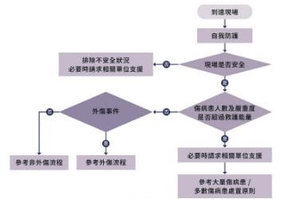

病人評估
救護技術員抵達現場後，首要任務是有系統地評估病人、正確判斷急迫性，並妥善完成院前通報與紀錄。
📋 前言
救護技術員抵達救護現場的目的是執行病人之評估與必要處置，給予及時急救處置，並將其送往就近適當的醫療機構。要達到以上目的，必須透過對現場環境的判斷以及對病人的初步評估，以決定自救護現場周圍以及對病人的處理—是否啟動大量或多數病人機制，以及選用適當流程執行個別病人之現場救護。
為使接收醫院能夠知道即將送達病人的情況，應以無線電或通訊軟體進行病情通報，並透過無線電或通訊軟體記錄救護措施，做為救護依據。
🎯 學習目標
瞭解救護現場安全及防護措施評估
知悉非外傷病人初級與次級評估
熟練病人初級與次級評估
熟悉詢問病史的方式和原則
熟練無線電通報技巧和救護紀錄表填寫
熟悉進階處置與操作及相關進階學理運用
📚 本章三大節
01 現場評估
接觸病人前的七大評估步驟——從安全確認到流程選定，是後續一切評估的基礎。
現場評估七步驟
到達現場後，應將救護車停放於安全、隨時可開離的位置，離開救護現場時視現況鎖上車門。
道路交通事故現場停放建議
救護車可停在事故現場之正前方處，車後門朝向病人，以利救護行進。
應停在事故現場正後方之適當位置，車頭斜放角度約 15–45 度，人員以安全方式下車，提升現場安全環境並建立安全工作區（圖 6-1）。
救護技術員的職責是救治病人，若自我保護不住可能會陷入危害，「自我保護」是每一趟救護前必須落實的事項。
- ① 評估現場安全並採取適當防護措施。
- ② 一般個案戴手套、外科口罩；必要時加護目鏡、防護衣、N95。
- ③ 防護未完備前與病人保持 1 公尺安全距離。
- ④ 法定傳染病依疾管署公告穿著防護裝備。
- ⑥ 疑呼吸道傳染病患若未戴口罩，提供外科口罩並避免從正面接觸病人。
- ⑦ 化學危害現場須提升至化學防護裝備，判斷環境不安全即請求支援，除污後再行處置。
現場環境安全評估是每一趟救護最首要的事項，包括救護事件本質為何、是否外傷或非外傷等，關切現場可能不安全的情況（共 7 點）：
若有以上狀況，應回報救指中心，並視現場狀況請求警察或相關專業人士、特殊救護或救援工具支援。
若為大量或多重傷病患事件，現場救護能量不足以應付時，應通報救指中心請求人力及裝備支援。
當傷病患人數或嚴重度超過地區或系統所能負荷的能量，即使採取最有效的應變措施，病人預後也無法達到原本應有水準。依緊急醫療救護法施行細則第 2 條第 3 項，係指單一事故、災害傷病患人數達 15 人以上，或預判可能達 15 人以上者。
傷病患人數超過 1 人，但未超過該地區或系統所能負荷的能量。一旦發生，現場指揮官應依災害之規模及類別，建立現場指揮協調系統、施行救護相關工作，救護技術員及運輸工具均應依指揮協調系統施行救護。
即使現場病人僅一人，若進行脫困、困難搬運或執行救護有疑難時，應及時通報救指中心，並視現場狀況請求下列人力或裝備的支援：
一旦完成前列事項後，應開始準備對病人施行評估。根據一開始對事件性質的分析，可初步將案件區分為「非外傷」或「外傷」，藉由簡單的自我介紹並快速掃瞄臨近病人，初步判定病人的急迫性。
若無法確定事件性質時，則先視同外傷事件進行評估，在接觸病人前，應將適當救護器材放置於適當之位置（圖 6-2、6-3）。
根據前列通用流程（圖 6-4），決定病人屬性。原則上若為「非外傷」，先選擇「非外傷」通用流程；若為「外傷」，則選擇「外傷」通用流程。若屬兒童、新生兒、緊急接生、溺水或灼燙傷等特殊救護案件，亦可直接以各章節該流程進行病人評估與處置。

圖 6-4 通用流程
02a 非外傷通用流程
初級評估依序進行：意識 → A（呼吸道）→ B（呼吸）→ C（循環）→ 輔助檢查。
意識評估
評估方式
以呼喚、輕拍肩膀立即確認意識；必要時以痛覺刺激（捏斜方肌、刺激甲床或指頭）確認意識程度。
AVPU 意識分級
⚠ 發現無脈搏及無適當呼吸（無呼吸或瀕死呼吸）
→ 立即進入非外傷 OHCA 流程
有脈搏且有適當呼吸
→ 繼續進行初評（A → B → C）；若非對痛無反應，則依序針對呼吸道、呼吸、循環評估。
A — 評估呼吸道 （可與呼吸一同評估）
評估方式
以看、聽方式評估呼吸道是否阻塞，若有阻塞應立即以通暢方法打開呼吸道。
① 呼吸道通暢
病人清醒且能正常說話，通常呼吸道無異常。非清醒時，若評估中無明顯雜音或嘴角分泌物等現象，基於保護呼吸道，若病人對痛無反應，可提早建立輔助呼吸道以免舌根後墜塞阻呼吸道。
② 呼吸道有聲音
非清醒時常見聲音為痰聲、鼾音或喘鳴聲（Stridor）。注意上呼吸道是否有液痰、異物阻塞（脫落牙齒、固狀物體）或舌頭後墜阻礙氣道；必要時給予壓額抬下頷法徒手暢通呼吸道，或輔助呼吸道或抽吸等處置。對於過敏性急性吸水腫所產生的喘鳴聲，因初中級救護技術員無法有效處置前，應盡速送往鄰近醫療院所。
③ 完全異物阻塞
病人因異物哽塞無法說話，須立即進行哈姆立克法處理；詳細流程請參考相關章節。
B — 評估呼吸 （可與呼吸道一同評估）
評估方式
以看、聽方式評估呼吸：深、淺、快、慢及有無明顯異常呼吸聲，評估時間不超過 10 秒（圖 6-9）。對於評估呼吸來說，呼吸道及呼吸可同時評估，觀察病人呼吸的型態及胸部呼吸起伏，也可以同時使用血氧機輔助評估。
處置原則
- • 呼吸可施行之必要處置：觀察呼吸況來決定，尚能使用鼻腔呼吸則可考慮給予鼻管；呼吸費力且張口呼吸等可考慮給予氧氣面罩或非再呼吸型面罩；氣切病人可考慮使用氣切面罩。
- • 如果病人已失去呼吸動力，應考慮給予人工呼吸協助病人呼吸。
- • SpO₂ < 94% 或病人仍有呼吸不適症狀，應給予適當氧氣治療。
- 血氧小於 90% 為危急個案。
C — 評估循環
脈搏評估
應查頸動脈搏（評估時間不超過 10 秒）。
應檢查兩側橈動脈搏（評估時間不超過 10 秒）；兩側同時檢查也是確認是否有脈壓差之狀況，進而思考有無主動脈剝離之可能性。
① 目視膚色
是否蒼白、發紺或異常；蒼白是血液循環異常的微兆之一，遠膚色較深者可注意其紅潤嘴唇是否變為蒼白。
② 末梢肢體溫度
是否濕冷；可以觸碰病人雙手掌察覺其溫度差異，濕冷狀況可能代表病人正處於末梢循環不良。
③ 微血管回充時間
按壓病人大拇指之指甲一秒後放開，觀察血液回充時間。大於 2 秒可能代表病人正處於休克狀態；注意此項檢查會受到環境影響。
對於評估循環而言，快速判斷病人是否處於休克狀況是相當重要的，也可同時使用血壓機輔助評估；但應以處置病人症狀為主，而非治療機器數值。
輔助檢查 （視況量測）
輔助查分為兩部分，一部分應視情況需要利用輔助器材量測；另一部分為重點式身體檢查，主要是針對病人主訴，執行相關部位的檢查以利後續處置。
以血壓計量測收縮壓及舒張壓。
以儀器量測為主，動脈點觸摸量每分鐘次數為輔。
以血氧濃度分析儀量測；SpO₂ < 94% 給予氧氣。
以體溫計量測。發燒、疑似低熱急症或意識不清之非外傷病人建議量測。
有下列症狀、徵候或病情時應考慮量測血糖：急性意識改變、混亂、冒冷汗、虛弱、顫抖、呼吸困難、低體溫或嚴重脫水；或懷疑急性腦中風；有糖尿病病史。
評估兩側瞳孔大小及對光反應；當病人有神經學症狀時，應檢查瞳孔、GCS 昏迷指數。
當懷疑病人有特殊急症，應進行相關特別檢查，如 12 導程心電圖及辛那提到院前中風指數等數值，請參考第七章所述。
其目的在於及時檢查出造成病人急症的原因，以利執行相對應的處置。各項檢查有其輕重緩急，應依主訴針對對應部位執行。
🧠 意識有問題
- • 檢查 GCS 昏迷指數及瞳孔大小與對光反應
- • 比較上下肢感覺及運動功能是否對稱
- • 檢查上下肢是否有異常針孔
🫁 呼吸有問題
- • 評估呼吸次數
- • 頸靜脈是否怒張或塌陷
- • 氣管是否偏移
- • 視診胸部呼吸時起伏是否對稱
- • 聽診兩側肺音
- • 檢查上下肢是否有浮腫、紅疹、紫斑或異常針孔
🫄 腹部有問題
- • 視診腹部是否有腫脹
- • 詢問腹部不舒服的位置
- • 觸診是否有壓痛、反彈痛；從疼痛部位對側開始，以順時針方向評估
以主訴、之前、吃、過、藥、敏、感方式詢問病史。
02b 外傷通用流程
外傷初級評估著重大量出血控制與頸椎保護，依序完成 X → 意識 → A → B → C → D → E → 輔助檢查。
評估有無大量出血（最優先）
評估方式
快速查看全身是否有立即可見且持續之外出血情形，若有則直接加壓止血或進行止血帶綁紮。
四肢大量出血 → 止血帶
應盡早使用止血帶（圖 6-31）。
頭頸、軀幹出血 → 乾紗布加壓
- • 加壓止血；如初步處置無法止血則考慮增加壓力，並盡快送醫。
- • 軀幹與肢體交界處加壓無效，可利用紗布或其他敷料傷口填塞，含止血製劑敷料至少加壓 3 分鐘，一般敷料至少 10 分鐘。
意識評估 + 頸椎減移
意識評估（AVPU）
- • 依序以呼喚、輕拍肩膀及痛覺刺激方式區分意識為清、聲、痛、否四種等級。
- • 疼痛刺激方式以單手按壓斜方肌為優先。
頸椎減移（外傷病人應儘早考慮）
第一時間遇到病人，除了目視有無大出血並立即止血外，也應於接觸病人前進行頸椎減移。建議以有效的頸椎減移技術限制病人頸部活動。
加拿大頸椎法則 — 確認低危因子（須全符合才可排除頸椎減移）：
① 確認以下高危因子
- • 年齡超過 65 歲
- • 四肢麻木或疼痛
- • 危險外傷機轉（從 ≥ 90 公分或 5 階樓梯高跌落、頭部系受上下的撞擊如跳水、機動車輛碰撞或自行車與物體碰撞）
如有任一高危因子 → 進行頸椎減移，不進行第二步。
② 確認以下低危因子
- • 輕微後方追撞車禍（不包含被大車或卡車撞擊、翻車或時速 >100km 高速車輛撞擊）
- • 事故發現場任何時間病人能行走
- • 病史詢問無頸部疼痛
- • 頸椎中線繞診無按壓疼痛
如上述因子皆符合 → 進行第三步，否則進行頸椎減移。
③ 確認能否主動旋轉頸部
病人如能自行將頭部向左或向右旋轉 45°，則可不進行頸椎減移，讓副手可以繼續限移動作，協助主手進行後續處置。
評估呼吸道 （可與呼吸一同評估）
評估方式
以看、聽方式評估呼吸道是否阻塞，若有阻塞應先以通暢方法打開呼吸道。外傷病人優先使用下頷推拿法。
圖 6-34 下頷推拿法徒手打開呼吸道
① 呼吸道通暢
同非外傷，但嘗試降低延遲性腦傷風險；雖然無明顯呼吸道阻塞情形，若 GCS < 9 分，建議例行性放置輔助呼吸道。
② 呼吸道出現血水、鼾音等部分阻塞情形
注意上呼吸道是否有血水或舌頭後壓塞阻氣道；必要時給予下顎推舉法暢通呼吸道；如無法施行可採壓額抬下顎法；如同時有血水及鼾音，需進行口咽部抽吸後再放置輔助呼吸道。
③ 頸圍造成呼吸道處置困難
可於頸椎減移下完成呼吸道處置，再放置頸圍。
評估呼吸 （可與呼吸道一同評估）
評估方式
以看、聽方式評估呼吸深、淺、快、慢及有無明顯異常呼吸聲，評估時間不超過 10 秒（圖 6-9）。
外傷版處置重點
同非外傷，但針對意識不清（GCS < 9 分）之病人，即使血氧濃度未小於 94%，也應積極給予氧氣治療及呼吸道建立，嘗試降低延遲性腦傷風險。
評估循環
① 對痛無反應病人
應查頸動脈搏（評估時間不超過 10 秒）。
② 其餘病人
應查兩側橈動脈搏（不超過 10 秒），並評估週邊循環：目視膚色是否蒼白、發紺，觸摸末梢是否濕冷，微血管回充時間是否 > 2 秒。
③ 外傷病人：骨盆穩固性
機械檢查骨盆是否穩固，不穩固時應立即給予固定（骨盆固定帶、三角巾或被單等），以向內側擠壓一次為限（圖 6-35）。
評估失能（Disability）
① GCS 昏迷指數
評估睜眼（E）、說話（V）、動作（M）三階段分數；識請不清的病人建議以按壓指甲來查看各項分數。
② 瞳孔
評估兩側瞳孔大小及對光是否有反應。瞳孔反應及顱內壓升高注意事項請參考第八章所述。
③ 上下肢感覺與運動功能
比較兩側上肢和下肢的感覺和運動功能。對清醒病人可詢問或讓其配合指令動作；意識不清者若無脫臼骨折或嚴重傷勢，可先用手將病人雙上肢高舉後鬆開，接著將病人兩膝彎曲後放開，觀察肢體運動失調程度（圖 6-21）。
評估病人身體（Expose）
評估方式
- ① 快速視診頭、頸、胸、腹、骨盆與肢體是否有救命性傷口。
- ② 檢查頸靜脈是否怒張或塌陷（圖 6-22），氣管是否偏移（圖 6-23），有無皮下氣腫。
- ③ 在保護病人隱私下視情況將病人衣物移除，並注意保管。
臨床意義
- • 頸靜脈怒張或塌陷：代表病人血液循環的問題。
- • 氣管偏移 + 頸靜脈怒張：代表病人可能有張力性氣胸的問題。
- • 皮下氣腫：應考慮有氣管損傷的可能性，積極給予氧氣治療、監測並送醫。
輔助檢查
完成 XABCDE 初級評估後，應視病情需要利用輔助器材量測；另一部分為重點式身體檢查。
同非外傷。
現場環境如有失溫風險，建議量測體溫。
有下列情形應考慮量測：症狀或機轉不符（無明顯外傷機轉）；意識清楚病人表示外傷前即有暈眩、虛弱、冒冷汗；有糖尿病病史。
同非外傷。
其目的在於及時檢查出造成病人初評異常的傷勢，以利執行相對應的處置；譬如病人有頸部外傷時，可先行檢查頭頸部及臉部是否有耳漏、鼻漏之問題。各式檢查的輕重緩急，建議學員應熟練次級評估之身體檢查，並參考後續章節討論各式外傷的重點式身體檢查項目，依傷勢適當運用。
以主訴、之前、吃、過、藥、敏、感方式詢問。
應先瞭解事故機轉，建議直接詢問「剛剛發生什麼事？」再接續詢問病人主訴「哪裡不舒服？怎麼不舒服？不舒服多久？」其餘詢問內容同非外傷。
03 院前病情通報與救護紀錄表填寫
準確的無線電通報和完整的紀錄表，是接續院內治療的橋樑，也是救護技術員的法律義務。
一、院前病情通報技巧
緊急救護現場主要通訊設備為無線電，運用其立即、迅速之優點，可將現場狀況及病人處置回報救指中心。轉送途中若病人病情變化危急時，應即時回報並通知醫院準備。
通話原則
內容需簡扼要，說話話調分明，發話速度讓接報的值動人員得以記錄。
救護技術員無線電通報內容（四項）
二、救護紀錄表填寫原則
依緊急醫療救護法第 14 條規定，救護技術員執行救護時應填具救護紀錄表。填寫必須確實，且須經醫護人員簽章確認。急救勤務均為 24 小時制填寫，流水號格式為：YYYYMMDDHHMMSS＋勤務序號（例如 20190101235959001）。
- • 各項時間點依 24 小時制如實填寫；若接觸病人時間與到達現場時間不一致，須補述欄位說明。
- • 填寫送往醫院或地點，以下列 3 個原則單一勾選：
① 就近適當（優先以 EMT 建議為主）；② 指揮中心（依救指中心指示送醫）；③ 病人或家屬要求。若建議就近適當，也應向病人或家屬解說。 - • 若未能送醫，應勾選原因；若病人拒送，需完成初級評估及生命徵象，以客觀數據向病人或家屬解說。
- • 現場死亡定義（衛生福利部緊急醫療救護委員會）：人體遭到屍腐、屍僵、屍體焦黑、無首、內臟外溢或軀幹斷肢之一，且無意識、無呼吸、無脈搏之情形。
- • 病人意識不清無法告知或拒絕提供證件者，則勾選不詳，性別及年齡可依病人外表評估後填寫。
- • 有任何金錢及重要物品須在財物欄位詳細填寫，並請本人、家屬或關係人等保管人簽名，記載與病人關係。
- • 若無家屬或關係人在場，至醫院後轉交接續處理人員代保管及簽名；若仍無法交接，以公函移送警察後續處理。
- ① 接觸病人後分「外傷」及「非外傷」二類，以勾選 1 項主要原因為原則；如有次要原因（「病人主訴：還有其他地方不舒服嗎？」），填寫在分項中，依病人主訴、家屬代訴、EMT 判斷勾選；若中途取消，依派遣命令填寫。
- ② 現場病人所述身體狀況及曾有醫療紀錄用文字登載；補述欄補充主訴及其他不舒服之處，讓 EMT 更易掌握病人狀況。
- ③ 過去病史及過敏依病人及家屬所述勾選，亦可於該項後文字注記（例如勾選精神疾病並注記憂鬱症），也可藉由病人用藥得知過去病史。
- ④ 特殊案件僅針對：OHCA 病人（記錄是否使用 PAD、ROSC 時間）、疑似心肌梗塞（登錄相關選項）、疑似腦中風（記載腦中風指標、最後正常時間，回報救指中心轉報責任醫院）。
- ① 處置項目區分基本呼吸處置、呼吸處置、外傷處置、搬運、特定後送姿勢、心肺復甦術、藥物處置及其他處置。依據單項技術確實有實施於病人者填寫勾選；未操作完成則勾也可以文字填寫，並注意各項處置之合理性。
- ② 藥物處置注意使用時機及禁忌症，例如協助使用 NTG 含片項，須留意病人之血壓等事項。
- ③ 全身傷勢記錄：於人形圖上標記受傷位置（左右方向須注意）、傷口類別（撕裂傷 L/W；擦傷 A/W 等）、傷口尺寸（公分為單位，如 3x5），灼燙傷另填程度及面積（以 ％ 單位，如 2度 18%）。
- ④ 補充欄位：重要事項或對病人有幫助之事項，若紀錄表未有可供勾選或填寫欄位，則於補充欄位填記。
- ⑤ ALS 處置：EMT-P 執行時填寫，並依各消防機關所訂核簽時間及方式，交由醫療指導醫師核簽；若醫師親自至現場指導或執行，則於補述欄以文字說明。
- ① 救護技術員簽名：為同車實際出勤人員。除了簽名外，需勾選病人到院前五級檢傷級數（若縣市未使用五級檢傷則免填）及急症或非急症的二級檢傷。
- ② 拒絕送醫簽名：病人拒絕送醫或拒絕接受救護處置時，應填寫拒絕處置之項目，要求病人簽名並填具聯絡電話。
- ③ 病人意識不清，家屬表示拒絕送醫或拒絕接受救護處置者，應填寫拒絕處置之項目，由家屬簽名並具明關係及聯絡電話。若病人或家屬拒絕簽名或不能簽名，則由關係人、鄰區員警、村里幹事等公務性第三人簽名，填具聯絡電話並記與病人關係。
- • 生命徵象依到達現場、送醫途中及到院後等時間次序測量並填寫；若後送時間較長或病情進展快，送醫途中可多次監測，並於補述欄填寫註記。
- • 有接觸病人而未送醫時，第一欄位生命徵象應填寫；除病人不願意接受量血壓、摸脈搏可免除填具並記錄拒測，但意識狀態應以觀察所得登載。
- • 「八大生命徵象」係指意識、呼吸、脈搏、血壓及瞳孔、體溫、膚色、血氧等八項，是救護病人是否穩定的數值量化，也是車上監測病人的重要指標。